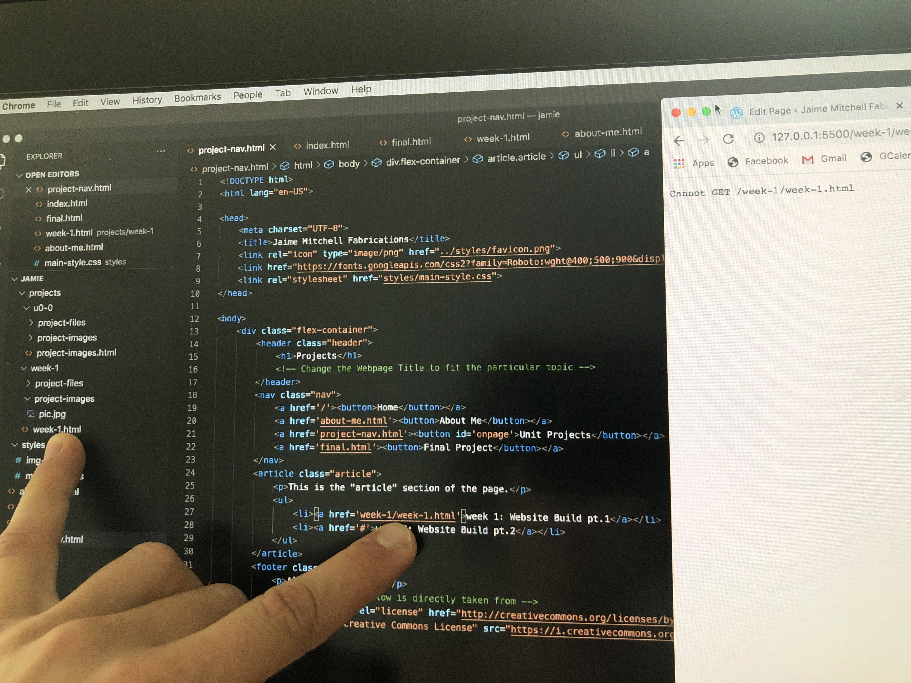
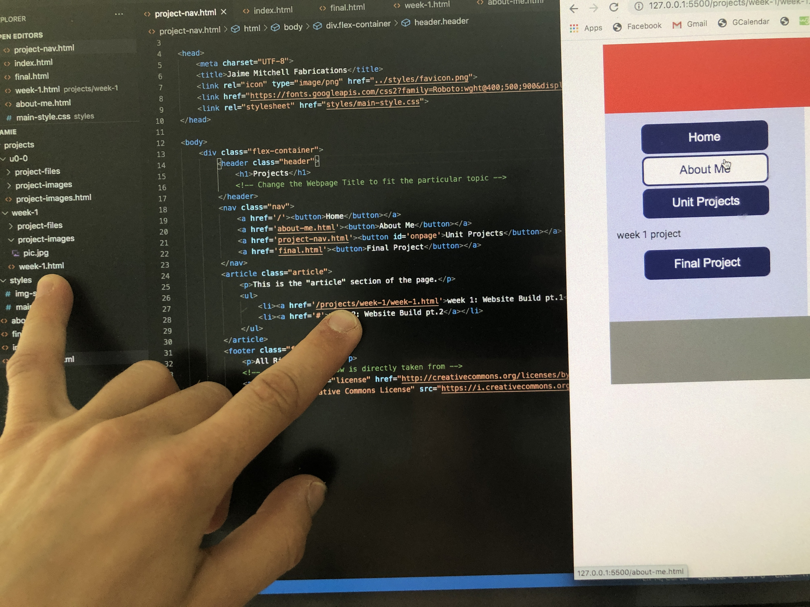

My only website building experience was Wix and Coroflot. After putting it off for about 20 years I finally built a website with HTML and CSS this week. I also tried my hand at Wordpress.
What I learned:
- I found HTML & CSS less frustrating and easy to problem solve through than WordPress or Wix.
It’s consistent and does exactly what I tell it to, so the mistakes tend to be mine,
such as linking or pointing to files incorrectly (as shown below).
- FAIL! 😦

SUCCESS! 😊
 - With WordPress/Wix I found it to be harder to move layout around and navigate basic controls, but easier to make it look pretty.
- Any failure to make things work was mainly from their clunky, buggy, difficult interface, or the withholding of features unless I pay to play.
- Wix is my preferred site if I’m going the point/click/drag/waste money route. It helped me get my feet wet in web design, shown here.
- Going on youtube to watch tutorials, visiting W3schools.com and spending an hour getting coached by the program's instructor, Corey Rice, helped build on my DIY confidence.